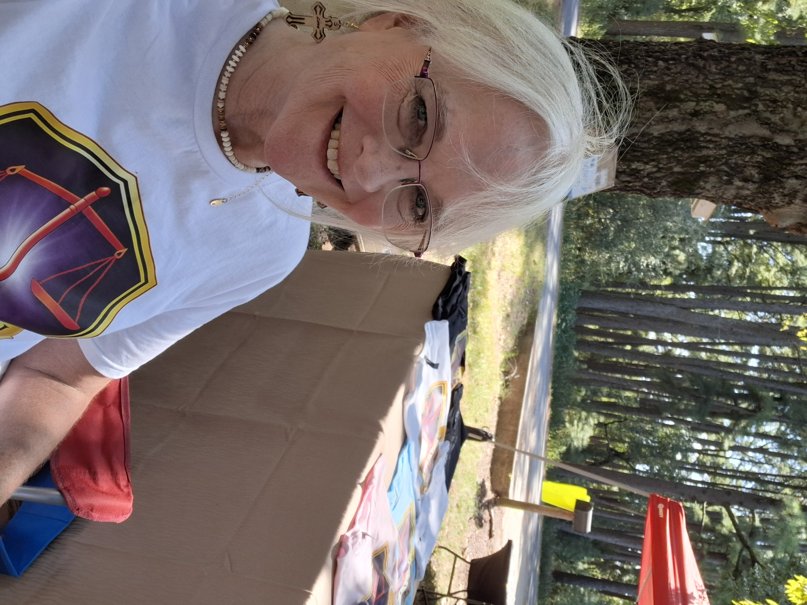
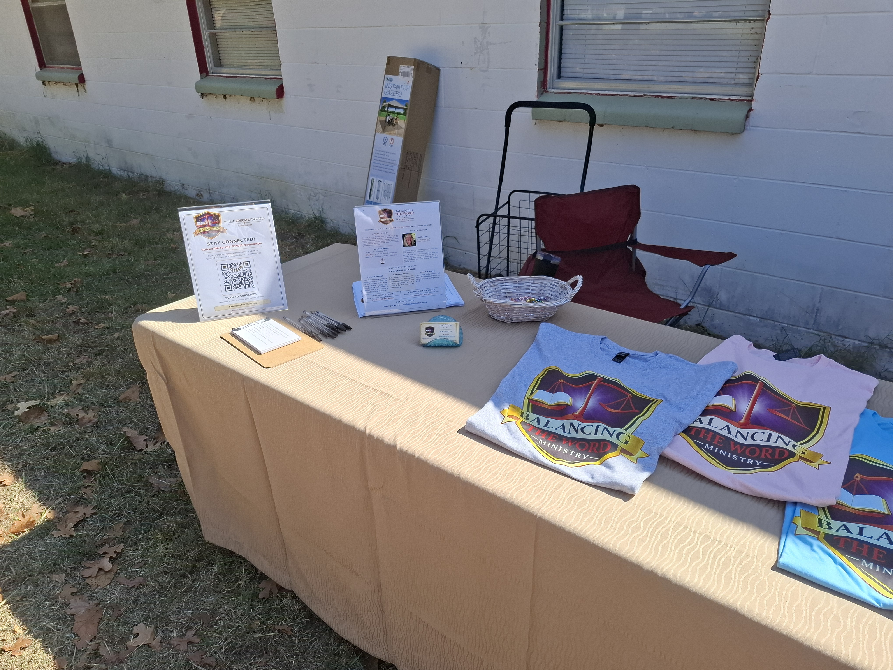

September 5, 2026
Ray’s Mission Labor Day Weekend Fundraiser
Balancing the Word Ministry joined the Labor Day weekend fundraiser with a ministry table featuring BTWM apparel, newsletter information, and resources for connecting with the ministry.

